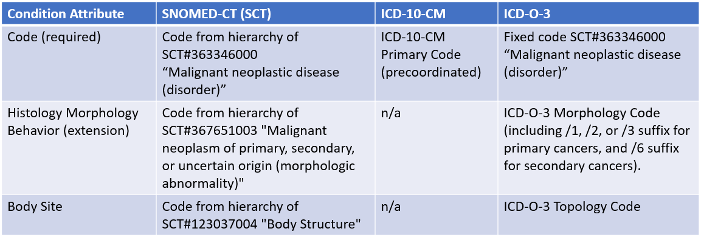

The mCODE Disease grouping includes data elements specific to the diagnosis and staging of cancer.
The process of diagnosing cancer consists of gathering relevant information which identifies that type of cancer as well as its characteristics and severity. At the highest level, these can be identified as the following subgroups:
Type of cancer |
Identifying the type of primary cancer and secondary cancer. |
|---|---|
Tumor characteristics |
The shape (histologic type) of the tumor cell with that of a normal cell. |
Staging |
an assessment of the severity and extent of the cancer type. Staging calculations will leverage results from the previous two categories, along with prognostic factors relevant to the cancer type, in order to assess an overall cancer stage group. |
Within EHRs, primary and secondary cancers are captured as structured and coded data for several purposes: problem list mangement, medical billing, and for cancer registry reporting. Each of these purposes could reference different code sets as the primary standard. These coding systems include:
Because each of these coding systems have a legitimate purpose and could be the reference terminology for a given Electronic Health Record (EHR), mCODE has modeled support for all three. An illustration of how each coding system differs is shown in the table below:
Implementers will need to reference the FHIR profiles PrimaryCancerCondition and SecondaryCancerCondition on how these codes bind to the model. Further FHIR example instances will be provided for further guidance.
Cancer staging is the process of determining how much cancer is in the body and where it is located. Staging describes the severity of an individual's cancer based on the magnitude of the original (primary) tumor as well as on the extent cancer has spread in the body. Understanding the stage of the cancer helps doctors to develop a prognosis and design a treatment plan for individual patients. (source: AJCC).
The AJCC staging system is recognized as one of the most widely-used standards for cancer staging. However, AJCC content is proprietary and cannot be shared for public use. Consequently, this guide does not include any AJCC values due to unresolved copyright issues. As such,elements related to staging may not currently include required terminology codes for assessing the cancer stage group.
As part of fair use, this IG will provide very limited examples illustrating mCODE's representation of cancer diagnoses and AJCC staging values for the purposes of technical implementation guidance to FHIR developers.
mCODE constrains the list of comorbid conditions that are relevant to cancer, and aligns with the Elixhauer Comorbidity Index as its main source.